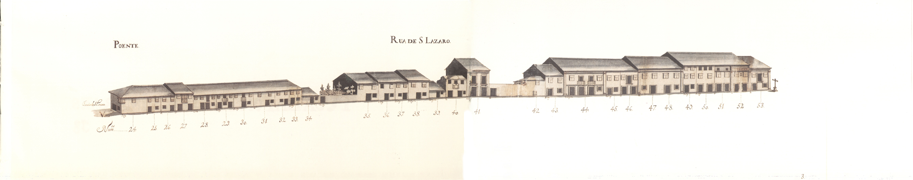

Rua de S.Lázaro - Nascente.

Rua de S.Lázaro - Poente.
Troço da grande via que ligava a Arcada à ponte de Guimarães, entre a
rua de Águas e o terreiro de S. Lázaro.
Aberta ainda na Idade Média esta velha rua tem o prazo mais antigo com a data de 1451.
Apesar de em 1750 ser ainda de arrabalde, havia nas suas casas uma certa diferença em relação
a outras com função semelhante: embora apenas com dois pisos, e apesar de haver algumas habitações do tipo já descrito
de porta com janela ao lado no piso térreo, a maior largura das suas fachadas, a existência de uma ou outra
varanda de ferro ou recoberta por gelosias, ou ainda de "molduras" de pedra, sobretudo em algumas portas, confere-lhe quase
outro estatuto de grandeza.
É curioso notar que nesta rua, que tinha 19 casas do lado Nascente e 29 do Poente, todos os edifícios estavam emprazados ao Cabido.
A rua de S. Lázaro corresponde hoje ao fragmento da avenida da Liberdade, entre o largo do Rechicho e a rua 25 de Abril.